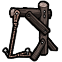

绞索陷阱DRNTF_NooseTrap

Kurin/Building/Trap/NooseTrap Single
耐久 30
魅狐的特殊绞索陷阱，只需少量材料即可快速制成。激活陷阱后，套索会束缚敌人的腿。它对大型敌人和机械单位没有效果。
DRNTF_NooseTrap
Kurin/Building/Trap/NooseTrap Single
耐久 30
魅狐的特殊绞索陷阱，只需少量材料即可快速制成。激活陷阱后，套索会束缚敌人的腿。它对大型敌人和机械单位没有效果。
Kurin_NooseTrapHediff
—
被绞索困住